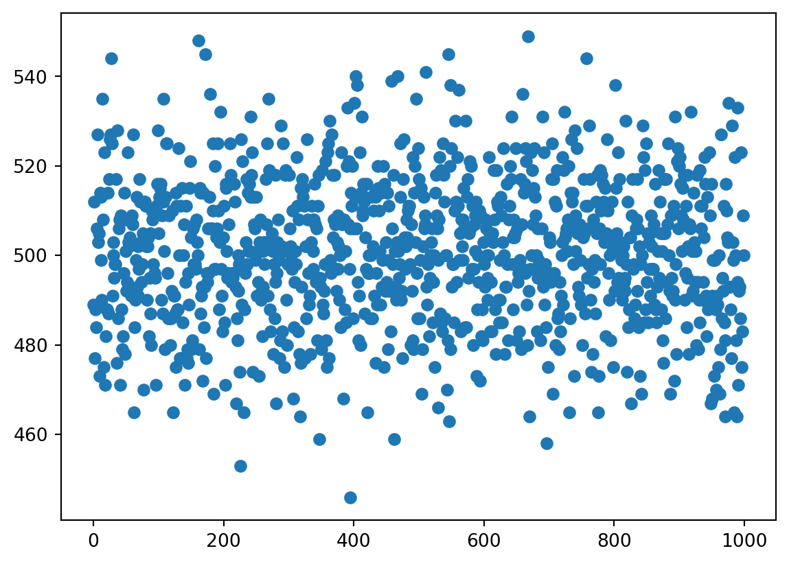

a/b0.6006774902343753A fair coin is tossed 25 times. Store at the variable a the probability to get 25 heads. A fair six-sided dice is throwing 10 times. Store at the variable b the probability to get 10 equal even scores. Find the ratio a/b.
a/b0.6006774902343753An experiment consists of selecting a token from a bag and spinning a coin. The bag contains \(345\) red tokens and \(678\) blue tokens. A token is selected at random from the bag, its colour is noted and then the token is returned to the bag.
When a red token is selected, a biased coin with probability \(\dfrac45\) of landing heads is tossed.
When a blue token is selected, a biased coin with probability \(\dfrac25\) of landing heads is spun.
Find the probability c of obtaining tail. Round the answer to 3 decimal digits.
c0.465In the conditions of the previous task, if the tail was obtained, what is the probability \(d\) of having selected a red token? Round the answer to 3 decimal digits.
d0.145Factorial of a natural (i.e. positive integer, or positive whole) number \(n\) is the product of all numbers from \(1\) to \(n\). It’s denoted \(n!\), i.e. \[ n! = 1\cdot 2\cdot \ldots \cdot n. \] It is also set that \[ 0! = 1 \]
We can calculate factorial manually, e.g. using a loop:
n = 10
f = 1
for i in range(2,n+1):
f *= i # this is the same as f = f * i
f3628800We can also use a special function:
import math
math.factorial(10)3628800There is also another large library, called scipy which contains factorials and many other scientific functions. Note, however, the additional parameter.
from scipy.special import factorial
factorial(10, exact=True) # Try without 'exact', notice the difference3628800Let \(n\) and \(k\) be natural numbers such that \(k\leq n\). The number of \(k\)-element subsets of an \(n\)-element set is called the binomial coefficient \(\binom{n}{k}\) (it reads as “\(n\) choose \(k\)”) and it can be calculated by the formula \[ \binom{n}{k}=\frac{n!}{k! \cdot (n-k)!} \]
In Python, we can use the following code, to get the number of \(4\)-element subsets of a \(10\)-element set
from scipy.special import comb
n = 10
k = 4
comb(n, k, exact=True)210In a school sport club, there are \(20\) children who like rugby more than football, and \(15\) chidlren who like football more than rugby. (Noone likes them equally.) The club wants to form a committee of \(6\) people: \(3\) football funs and \(3\) rugby funs. How many ways does there exist to form the committee? Store the answer in w.
Remark. Note that since the choice of football funs does not depend on the choice of rugby funs, we need just to multiply the number of ways to choose fotball funs and the number of ways to choose rugby funs.
w518700Let now the committee (of 6 children) is chosen without any restrictions on the preferences of its members. Find the number of ways to form the committee. Store the answer in r.
r1623160Finally, find the probability p that a randomly choosen committee consisting of 6 children has equal numbers of football and rugby funs. Round to \(4\) decimal digits.
p0.3196If \(10\) balls are randomly drawn from a bag containing \(17\) blue and \(19\) yellow balls, what is the probability q that \(4\) of the balls are blue and the others are yellow? Round to \(3\) decimal digits.
Note that despite the balls of the same colour are indistinguishable (in contrast to children of the same sport preference in the previous tasks), we may always think that the balls e.g. numbered, to apply the same arguments as before.
q0.25404208941472567To model various random events in Python, we may use module random:
import randomLets model tossing a fair coin. Define the list
coin = ['h','t']Command random.choice(list_name) would return a randomly chosen element from a list list_name assuming that any such an element can be picked with equal probability.
Choose a random element from the list coin. The output will be one of two letters h or t, e.g.:
't'Note that if you run the same code again and again you may get each time another output.
Congratulations: you made your first probability model.
Suppose we tossed the coin n_trials = 10 times. Generate a list called series that would contain outputs of all these trials, e.g.
['h', 't', 'h', 't', 't', 't', 'h', 'h', 't', 'h'](your output will be probably different).
Advice: it may be more convenient to use list comprehension instead of loops, though it’s up to you. Recall that range(10) command generates 10 numbers from 0 to 9.
Count the number of “heads” in series, using property list_name.count(element_name) to get the number of elements element_name in the list list_name.
5Load library pyplot of module matplotlib as follows:
import matplotlib.pyplot as pltChange now n_trials to 1000. We expect to see around 500 heads in a series of trials, though if you run your code, you will probably get another number. Define n_series = 1000 and repeat running the previous code n_series times, i.e. the output should be a list of n_series numbers. Store the output in a variable heads.
Again, you may find more useful to use list comprehension.
Create the scatter plot of numbers of heads in all series using the commands plt.scatter(x, heads) and plt.show(), where x would be all numbers from 0 to n_series.
Your output should be similar to:

As you can see all results indeed gather around 500. Note that you can find min(heads) and max(heads) to see how large is the spread of numbers, e.g. on the picture above it’s
[min(heads),max(heads)][446, 549]Of course, our approach may become very time-consuming when n_series becomes large. There exist special functions for generating big amounts of random values. The following code generates n = 10 random integer numbers from the interval \([0,2)\) (i.e. either \(0\) or \(1\)):
import numpy as np
n = 10
a = np.random.randint(2, size=n)
aarray([0, 0, 0, 1, 0, 0, 0, 1, 1, 0])We may think then that \(0\) stands for h and \(1\) stands for t (or vice versa). Then the number of tails is the number of \(1\) in a, that is just the sum of all elements from a. Note that despite sum(a) would work, for large values of n, the following code will be faster:
s = a.sum()
s3If now we want to repeat the previous code \(5\) times, getting each time a number s of tails, we may use the following modification of the code:
a_series = np.random.randint(2, size=(5,n))
a_seriesarray([[1, 1, 1, 0, 1, 1, 0, 1, 1, 0],
[1, 1, 0, 1, 0, 1, 1, 1, 0, 0],
[1, 1, 0, 1, 0, 0, 1, 0, 0, 0],
[1, 0, 0, 0, 0, 1, 0, 1, 0, 0],
[0, 1, 0, 1, 1, 1, 0, 1, 1, 1]])and also
s_series = a_series.sum(axis=1)
s_seriesarray([7, 6, 4, 3, 7])We can also calculate the average of obtained numbers (their sum divided by their quantity):
s_series.mean()5.4Consider again that we toss the coin \(1000\) times and count the number of tails, but repeat this procedure \(10^5\) times. Calculate the average m of the obtained result.
500.07238As expected, the result is pretty close to \(500\) (your result may differ from this, of course).
We can also model unfair coins. The command
n=10
np.random.choice([0,1], size=(5,n), p=[0.6, 0.4])array([[1, 1, 0, 0, 1, 1, 0, 1, 1, 0],
[0, 0, 0, 1, 0, 1, 1, 0, 0, 1],
[0, 1, 0, 1, 0, 0, 0, 0, 1, 1],
[1, 1, 0, 1, 1, 0, 1, 1, 1, 0],
[0, 0, 0, 0, 0, 0, 0, 1, 1, 1]])generates \(5\) series of \(10\) outputs each with the probability for head \(0.6\) and the probability for tail \(0.4\). Calculate again the average for \(10^5\) series of \(1000\) trials.
399.98529The result is pretty close to \(400 = 0.4*1000\). We discuss the theoretical justification for this on Week 3.